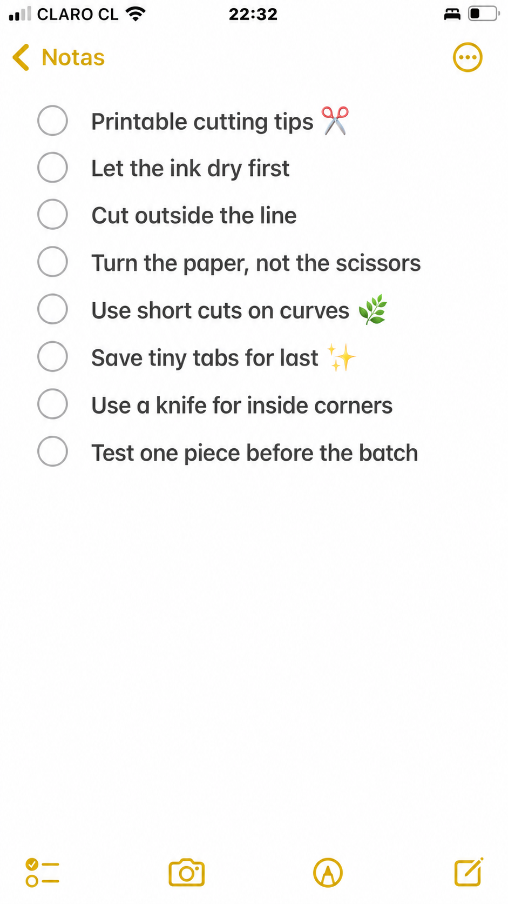
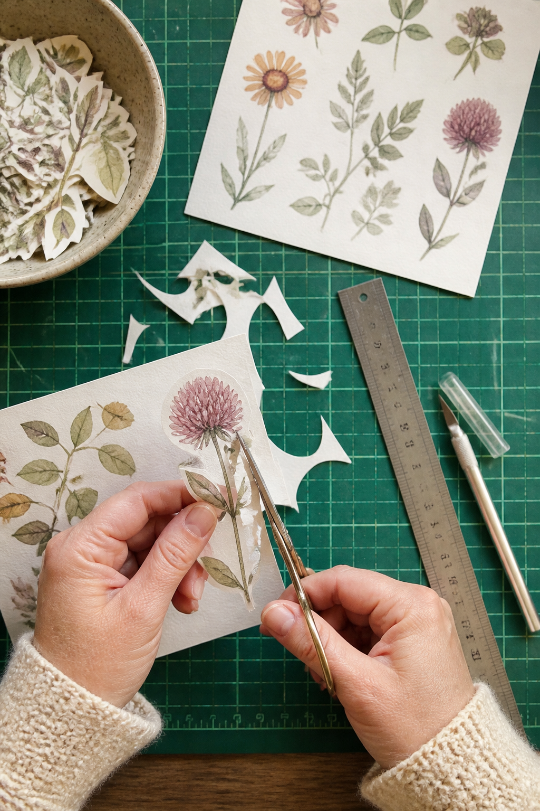
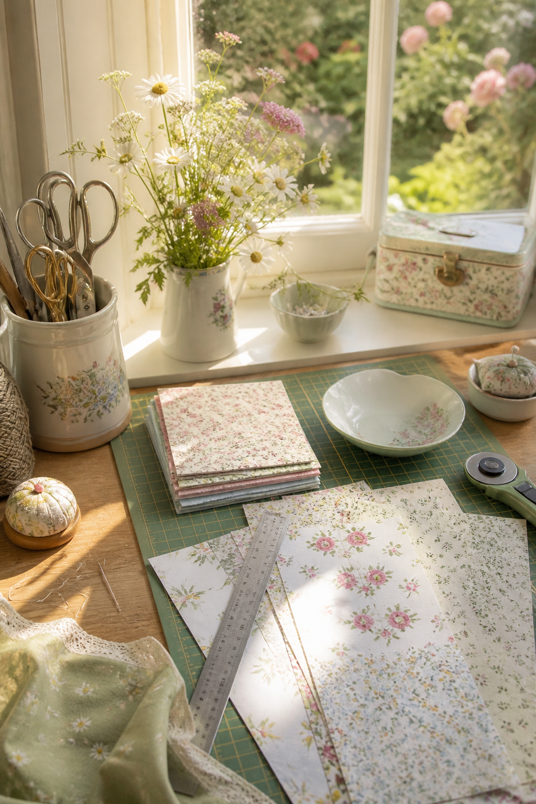
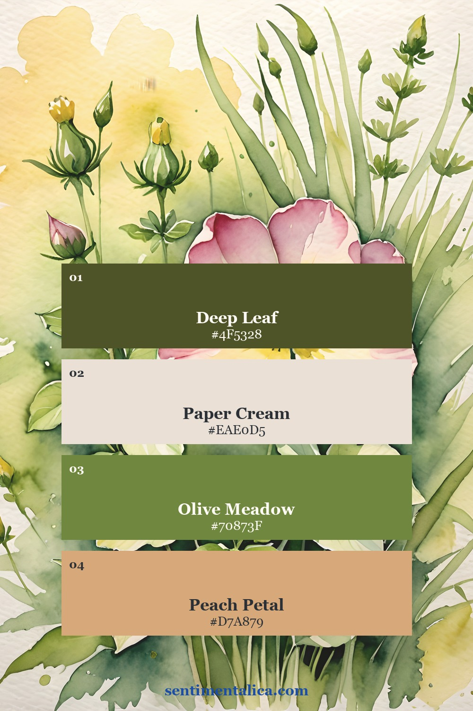
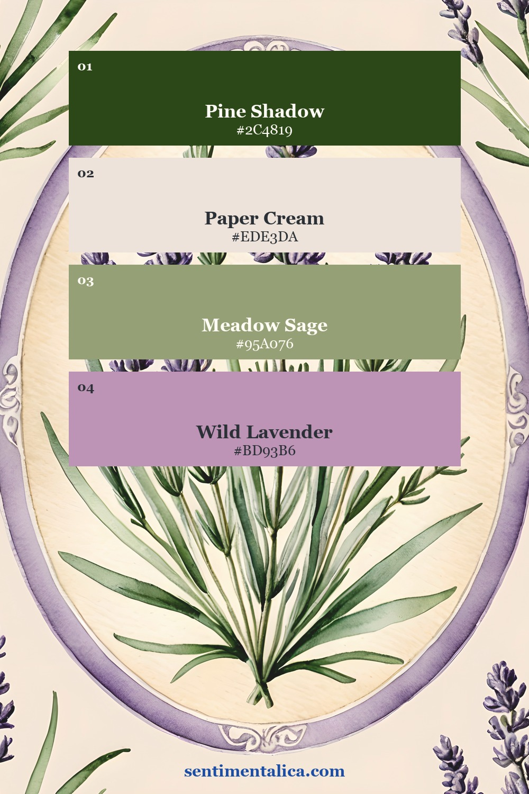
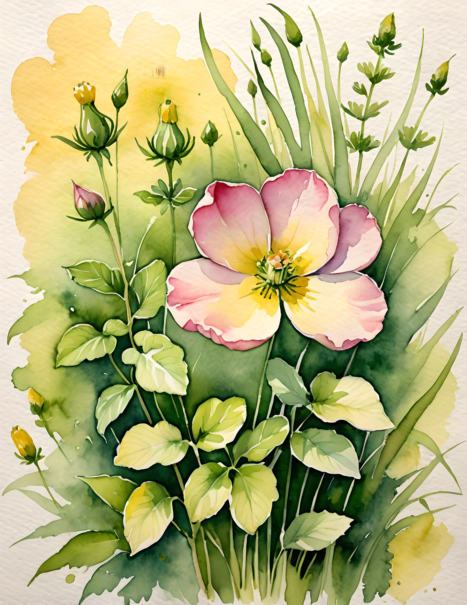
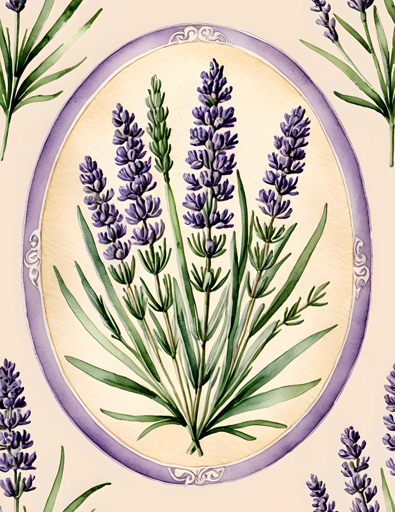

A printable can be beautifully designed and still look awkward after cutting. White halos become uneven, curves turn angular, and one tiny tab tears at the final moment. Cleaner results come from a few small habits, especially slowing down before the difficult edge.

Before cutting: let the print settle
Give the ink time to dry before stacking, rubbing, or cutting the sheet. Ten to fifteen minutes is often enough for ordinary home printing, but dense dark areas may need longer. If the surface still feels tacky, leave it alone. Fresh ink can transfer to your fingers and then back onto the pale parts of the design.
Decide whether you want a narrow white border or a cut that follows the artwork. A consistent border is usually easier and more forgiving. Cut just outside the printed edge rather than accidentally shaving color away from one side.
For curves: turn the paper, not the scissors
Hold small sharp scissors comfortably and keep the blades moving in short, controlled cuts. Rotate the paper with your other hand so the cutting direction stays natural. This creates a smoother curve than forcing the scissors around a flower or butterfly in one long squeeze.

Leave narrow stems, antennae, and tiny decorative tabs until the larger surrounding pieces have been removed. A smaller piece of paper is easier to turn, and the fragile detail is less likely to crease while you work around the outside.
For corners: match the tool to the shape
Scissors are excellent for outside edges. A craft knife is better for an interior window, slot, or tight inside corner. Work on a proper cutting mat, use a metal ruler for straight lines, and cut away from your fingers. Make several light passes instead of one hard pass.
For a crisp corner, cut slightly beyond the meeting point with the knife, then approach from the second direction. For rounded tags, trace one corner template and reuse it so every curve matches.

Before a batch: test one complete piece
Print and finish one piece before committing to ten. The test reveals whether the paper is too thick for small scissors, whether a border needs to be wider, and whether the colors remain balanced after trimming. Write the successful print setting on the back of the sample.
Keep a shallow bowl beside the mat for offcuts. Large quiet pieces become tabs or labels; narrow strips become collage bridges. Very small fragments can go into a color-sorting jar rather than covering the cutting surface.
Practice without risking a paid page
The 100 free floral pictures from Sentimentalica are useful for practicing borders, curves, and small botanical shapes. Print the same flower at two sizes. The larger copy teaches the motion; the smaller copy shows which details are worth simplifying.
Two botanical palettes to guide the finished project
These palette cards were sampled from real Meadow Flutter and Wild Meadow pages. The first is fresh and springlike with peach, cream, and olive. The second uses lavender as the accent against pine and sage.


See the real pages before you choose your cuts
Meadow Flutter offers flowers and butterflies with natural outlines to follow. Wild Meadow brings lavender and botanical medallions into the same soft nature-led world. These are real customer pages from the collections.


Start with one generous border and one simple curve. Clean cutting is not speed. It is choosing the edge you want, then giving your hands enough room to make it. Find more practical craft guidance in the Sentimentalica journal.